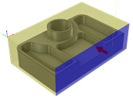
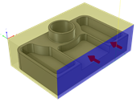

XY Rectangular Boss
XY Outer Corner
In the canvas, select one of more faces on the stock. The selected faces determine the available Probe Type options.
Note: To select faces on the model, change the Probe Mode to Model.
Examples of selected faces and Probe Type options:
|
|
XY Rectangular Boss |
XY Outer Corner |
 |
 |
Y Surface |
Angle Along Y Axis |
 |
 |
X Wall |
XY Circular Boss |